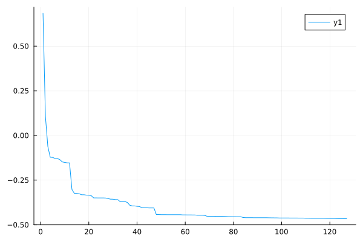
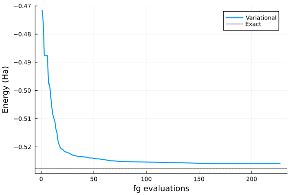
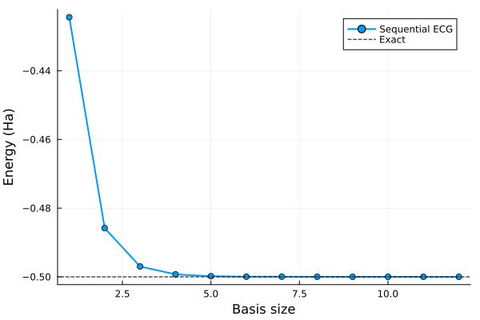
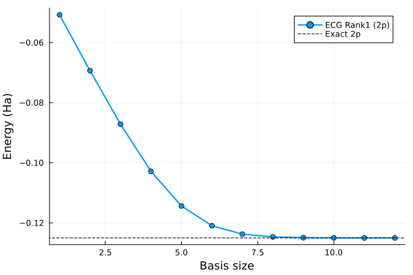
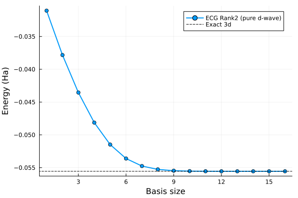
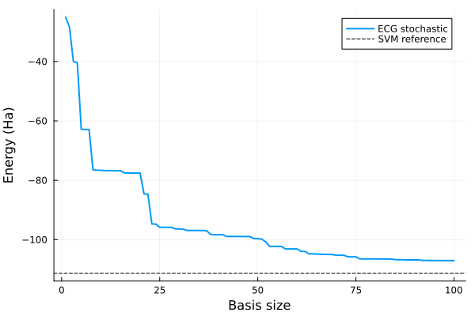

Examples
Suppose you want to calculate the ground state energy of the hydrogen anion in the rest-frame of the proton.
using FewBodyECG
using Plots
masses = [1.0e15, 1.0, 1.0]
ops = Operators(masses, [+1, -1, -1]) # proton, e₁, e₂
ops += "Kinetic"
ops += "Coulomb" # adds all 3 pairwise interactions automatically
result = solve_ECG(ops, 250, scale = 1.0)
E = -0.527751016523
ΔE = abs(result.ground_state - E)
@info "Energy difference" ΔE
n, E = convergence(result)
plot(n, E)
Variational optimisation with solve_ECG_variational
The stochastic solver above builds the basis greedily from random samples. solve_ECG_variational instead treats all Gaussian parameters (the A matrices encoded through their Cholesky factors, and the shift vectors s) as continuous variables and minimises the ground-state energy directly with L-BFGS via OptimKit.jl.
Fresh start
using FewBodyECG
using Plots
masses = [1.0e15, 1.0, 1.0] # H⁻: fixed nucleus + 2 electrons
ops = Operators(masses, [+1, -1, -1])
ops += "Kinetic"
ops += "Coulomb"
sr = solve_ECG_variational(ops, 20; scale = 1.0, max_iterations = 200, verbose = false)
E_exact = -0.527751016523
println("Variational E₀ = ", round(sr.ground_state, digits=8),
" ΔE = ", round(sr.ground_state - E_exact, sigdigits=3))
xs, ys = convergence_history(sr)
plot(xs, ys; xlabel="fg evaluations", ylabel="Energy (Ha)",
label="Variational", lw=2)
hline!([E_exact]; label="Exact", linestyle=:dot, color=:black)
Sequential variational solver (solve_ECG_sequential)
solve_ECG_sequential builds the basis one function at a time. At each step it samples n_candidates quasi-random Gaussians, picks the one that lowers the energy the most, appends it to the current basis, and then jointly optimises all accumulated parameters with L-BFGS. This combines the diversity of stochastic sampling with gradient-based refinement at every step.
Here we apply it to the hydrogen atom ground state (1s):
using FewBodyECG
using Plots
masses = [1.0e15, 1.0] # hydrogen: heavy nucleus + electron
ops = Operators(masses)
ops += "Kinetic"
ops += ("Coulomb", 1, 2, -1.0) # electron–nucleus attraction
sr = solve_ECG_sequential(ops, 12;
n_candidates = 8, scale = 1.0, max_iterations_step = 80, verbose = false)
println("E(1s) = ", round(sr.ground_state; digits = 8), " Ha")
println("Exact = -0.50000000 Ha")
n_steps, E_steps = convergence(sr)
plot(n_steps, E_steps;
xlabel = "Basis size", ylabel = "Energy (Ha)",
label = "Sequential ECG", lw = 2, marker = :circle)
hline!([-0.5]; label = "Exact", ls = :dash, color = :black)
Higher angular momentum: Rank1Gaussian (p-wave) and Rank2Gaussian (d-wave)
Rank0 Gaussians are spherically symmetric. Non-zero angular momentum states require polynomial prefactors.
p-wave with Rank1Gaussian
Rank1Gaussian(A, a, s) adds a linear prefactor (a⋅r) selecting a spatial direction. For the hydrogen 2p state (exact energy −1/8 Ha):
using FewBodyECG
using LinearAlgebra
using Plots
masses = [1.0e15, 1.0]
ops = Operators(masses)
ops += "Kinetic"
ops += ("Coulomb", 1, 2, -1.0)
a_p = [1.0] # polarisation along the single Jacobi coordinate
s_zero = [0.0]
alphas = exp10.(range(log10(0.003), log10(3.0), length = 12))
basis = GaussianBase[]
E_conv = Float64[]
for α in alphas
push!(basis, Rank1Gaussian([α;;], a_p, s_zero))
bset = BasisSet(basis)
H = build_hamiltonian_matrix(bset, ops)
S = build_overlap_matrix(bset)
vals, _ = solve_generalized_eigenproblem(H, S)
push!(E_conv, minimum(vals))
end
println("E(2p) = ", round(minimum(E_conv); digits = 8), " Ha")
println("Exact = -0.12500000 Ha")
plot(1:length(E_conv), E_conv;
xlabel = "Basis size", ylabel = "Energy (Ha)",
label = "ECG Rank1 (2p)", lw = 2, marker = :circle)
hline!([-0.125]; label = "Exact 2p", ls = :dash, color = :black)
d-wave with Rank2Gaussian
Rank2Gaussian(A, a, b, s) adds a quadratic prefactor (a⋅r)(b⋅r). For a pure d-wave channel the two polarisation vectors must be orthogonal. In a 1D Jacobi system (two-body) the three Cartesian directions are encoded as columns of a 1 × 3 polarisation matrix:
using FewBodyECG
using LinearAlgebra
using Plots
masses = [1.0e15, 1.0]
ops = Operators(masses)
ops += "Kinetic"
ops += ("Coulomb", 1, 2, -1.0)
# Orthogonal Cartesian directions → pure d-wave channel (a ⊥ b)
a_d = reshape([1.0, 0.0, 0.0], 1, 3)
b_d = reshape([0.0, 0.0, 1.0], 1, 3)
s_zero = [0.0]
alphas = exp10.(range(log10(0.002), log10(0.8), length = 16))
basis = GaussianBase[]
E_conv = Float64[]
for α in alphas
push!(basis, Rank2Gaussian([α;;], a_d, b_d, s_zero))
bset = BasisSet(basis)
H = build_hamiltonian_matrix(bset, ops)
S = build_overlap_matrix(bset)
vals, _ = solve_generalized_eigenproblem(H, S)
push!(E_conv, minimum(vals))
end
println("E(3d) = ", round(minimum(E_conv); digits = 8), " Ha")
println("Exact = ", round(-1/18; digits = 8), " Ha")
plot(1:length(E_conv), E_conv;
xlabel = "Basis size", ylabel = "Energy (Ha)",
label = "ECG Rank2 (pure d-wave)", lw = 2, marker = :circle)
hline!([-1/18]; label = "Exact 3d", ls = :dash, color = :black)
Muonic molecule tdμ
The muonic three-body molecule tdμ (triton + deuteron + muon) is a nuclear-scale system with masses three orders of magnitude larger than an atomic system. A much smaller Gaussian width scale (~0.03 in nuclear units) is required; this can be passed directly via the scale keyword.
using FewBodyECG
using Plots
masses = [5496.918, 3670.481, 206.7686] # t, d, μ in electron masses
ops = Operators(masses, [+1, +1, -1]) # triton, deuteron, muon
ops += "Kinetic"
ops += "Coulomb" # t-d repulsion (+1), t-μ and d-μ attraction (-1)
result = solve_ECG(ops, 100; scale = 0.03, verbose = false)
println("E(tdμ) = ", round(result.ground_state; digits = 5), " Ha")
println("SVM ref = -111.36444 Ha (Suzuki & Varga 1998, Table 8.1)")
n, E = convergence(result)
plot(n, E;
xlabel = "Basis size", ylabel = "Energy (Ha)",
label = "ECG stochastic", lw = 2)
hline!([-111.36444]; label = "SVM reference", ls = :dash, color = :black)
Warm start: stochastic basis + variational refinement
When the stochastic solver has already found a reasonable basis, refining it with loss_type = :trace (minimise Tr(S⁻¹H)) often converges faster than a fresh L-BFGS run.
using FewBodyECG
masses = [1.0e15, 1.0, 1.0]
ops = Operators(masses, [+1, -1, -1])
ops += "Kinetic"
ops += "Coulomb"
sr_stoch = solve_ECG(ops, 20; scale = 1.0, verbose = false)
basis0 = BasisSet(Rank0Gaussian[sr_stoch.basis_functions...])
sr_warm = solve_ECG_variational(ops, 20;
initial_basis = basis0,
loss_type = :trace,
max_iterations = 200,
verbose = false,
)
E_exact = -0.527751016523
println("Stochastic E₀ = ", round(sr_stoch.ground_state, digits=8),
" ΔE = ", round(sr_stoch.ground_state - E_exact, sigdigits=3))
println("Warm-start E₀ = ", round(sr_warm.ground_state, digits=8),
" ΔE = ", round(sr_warm.ground_state - E_exact, sigdigits=3))┌ Info: Optimization complete
│ E₀ = -0.33451268710357074
│ n_basis = 20
└ state = 1
┌ Info: Variational ECG complete
│ E₀ = -2.2204460492503436e-16
└ n_basis = 20
Stochastic E₀ = -0.33451269 ΔE = 0.193
Warm-start E₀ = -0.0 ΔE = 0.528